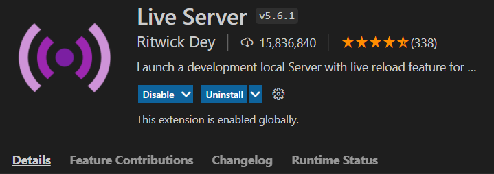
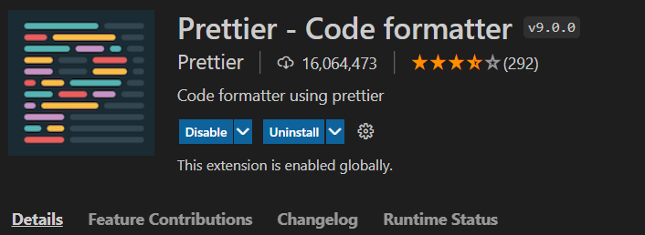
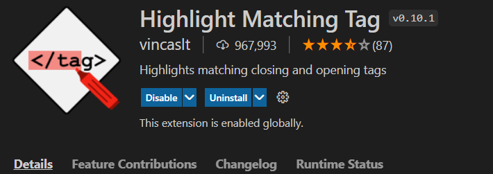
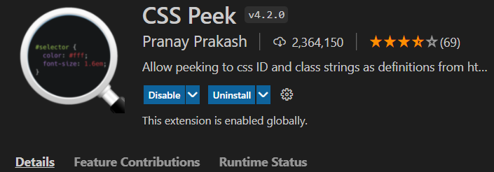

1.Auto rename Tag
If you change start tag, it automatically change end tag
2.Live Server
If you save your coding, it automatically update your code on web site
3.Prettier
Prettier is an opinionated code formatter. It enforces a consistent style by parsing your code and re-printing it with its own rules that take the maximum line length into account, wrapping code when necessary.
4.Highlight matching tag
Highlights matching closing and opening tags.
5.CSS Peek
If you do CTRL + click on element of HTML, you can go to the target on CSS
